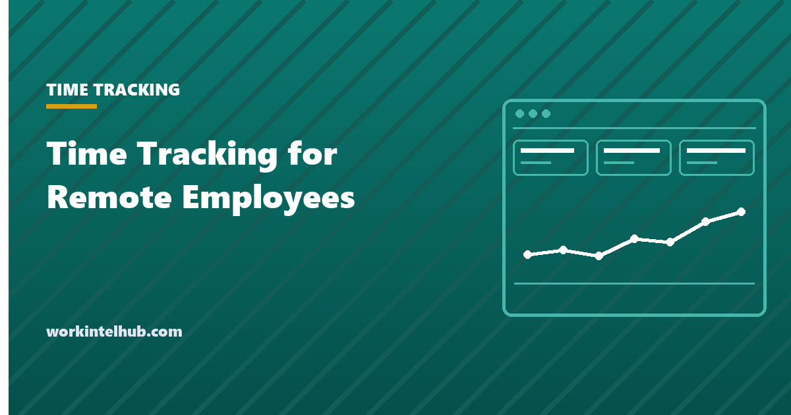

Time Tracking for Remote Employees That Your Team Will Support

Time tracking for remote employees is a measurement practice that records how working hours are distributed across projects, clients, and tasks, so that a distributed team and the person managing it can plan against a real record instead of a guess. The mechanics are ordinary. The reaction is not. Some teams argue in a staff meeting to keep their tracking system. Others quietly enter five identical eight-hour blocks every Friday afternoon. The gap between those two outcomes has almost nothing to do with which system you chose and almost everything to do with who is allowed to see the data, and when.
This is not a small population to get wrong. Pew Research Center, surveying 2,315 US adults whose jobs can be done from home, reported in January 2025 that 75% of them work remotely at least some of the time and that 75% are now required in the office on certain days, up from 63% in early 2023. Most American knowledge teams are split across places and schedules, and the hours record is often the only shared view anyone has.
What time tracking for remote employees actually measures
Time tracking measures two things: duration and attribution. How long a piece of work took, and what it counted against. That is the entire scope of the record. It does not measure difficulty, care, judgment, or whether the outcome was any good, and a timesheet showing six hours on a proposal tells you nothing about the proposal.
Managers get into trouble when they forget that limit. Hours are an input. Treating an input as a stand-in for contribution is how a team starts optimizing for the number rather than the work, which is Goodhart's Law arriving on schedule. Our complete guide to employee productivity sets out where hours belong among the other signals worth watching, and that list is shorter than most dashboards suggest.
So what is the data good for? Questions about shape, not questions about people. Where unplanned work comes from. How much of the week survives as focus time. Which projects run past the estimate. Those have answers a team can act on this month, and none require ranking individuals.
Why time tracking for remote employees meets resistance
Resistance is usually about asymmetry of visibility, not privacy as an abstract principle. Few people are deeply offended that their hours are recorded somewhere. They are offended by an arrangement where information runs in one direction: they produce the record, someone above them reads it, and they never see the result or learn what it changed. People also read the request as an accusation, which is fair enough when so many tracking programs are pitched with time theft figures that fall apart the moment you check where they came from.
That asymmetry does two things. It makes the data feel like evidence being gathered rather than an instrument the team shares, and it removes any reason to be accurate. If the timesheet only travels upward, the sensible move is to submit something tidy. Tidy is exactly what you get, and it is worthless for planning.
There is a second, quieter reason: an honest week often looks bad on paper. Microsoft's 2025 Work Trend Index, which combined anonymized Microsoft 365 telemetry with a survey of 31,000 knowledge workers across 31 markets, reported that employees are interrupted every 2 minutes during work hours, adding up to 275 interruptions a day, and that 48% of employees and 52% of leaders say their work feels chaotic and fragmented. Anyone whose day was shredded like that knows a clean timesheet reads better than a truthful one.
Fear of comparison follows. Remote knowledge work varies enormously in how long a result takes, and everyone has legitimate hours that look weak in a column. Three hours unblocking a colleague is valuable work with nothing to show under a project code. Working out how to measure employee productivity when you cannot see the work is the prior question, and hours answer only part of it.
Show people their own data before you show anyone else
The strongest predictor of whether a remote team supports tracking is whether each person can see their own record first, in full, without asking. Reciprocity is not a courtesy here. It is the mechanism that converts a compliance chore into something people use for their own benefit. The same reciprocity decides whether you can monitor employees working from home without losing them.
That means three commitments. Every person gets a view of their own data at least as detailed as any view a manager has. Team-level aggregates go to the team, not only to leadership. And when the data drives a decision, you name the data out loud, so the link between recording and result stays visible to the people doing the recording.
A test you can apply in ten seconds
If you would be uncomfortable showing a raw field to the person it describes, do not collect that field. This test rules out most of what gets employers into trouble, and it rules it out before the data exists rather than after a breach, a subpoena, or a resignation letter.
Does showing people their own numbers change behavior? It changes the quality of the record more than the behavior. When people can see their week laid out, they start correcting entries because the picture is wrong, not because someone chased them. Accuracy becomes self-interested, which is far more durable than reminder emails. Where the boundary sits between a shared instrument and something else is covered in our piece on what employee monitoring should never collect.
What to track, and what to leave alone
Track the smallest set of fields that answers the question you started with. Everything past that is collection for its own sake, and each extra field costs goodwill at a rate that has nothing to do with how harmless the field looks to you.
| Data | Worth collecting? | Why |
|---|---|---|
| Hours by project or client | Yes | Feeds capacity planning, quoting, and workload conversations directly. |
| Meeting time versus focus time | Yes | One of the few numbers a manager can act on the same week they see it. |
| Unplanned or interrupt-driven work | Yes | Explains why planned work slipped without blaming the person it slipped on. |
| Application and site categories, in aggregate | Sometimes | Useful for spotting tool sprawl. Rarely useful at the individual level. |
| Idle time and activity scores | Rarely | Thinking looks identical to idling. The measure punishes the wrong thing. |
| Keystrokes, screenshots, webcam | No | High intrusion, low decision value, and a permanent cost to trust. |
The caveat we owe you: that table assumes salaried knowledge work. Agencies that invoice by the hour genuinely need task-level detail, and regulated or client-audited functions carry obligations that outrank anyone's preference. Whether a person types that detail in or corrects what software captured is a separate decision, and we compare manual and automatic employee productivity trackers field by field.
Signs the record has stopped being true
The clearest failure signal is uniformity. Real weeks are lumpy. When timesheets arrive as clean repeating blocks with no ragged edges, people have stopped recording their week and started composing it.
- Every entry is created on Friday, minutes apart, covering five days.
- Nobody ever logs an hour against admin, rework, or helping a colleague.
- Totals reconcile to contracted hours every week, for everyone, exactly.
- Questions arrive as private messages to you instead of being raised in the team channel.
- Adoption is high and usage is zero: everyone submits, and no decision has ever cited the data.
That last one matters most. If you cannot name a concrete change the data produced last quarter, either find one or stop collecting.
What to look for in time tracking software for remote employees
Judge time tracking software for remote employees on what it lets you refuse, not on what it lets you collect. Feature lists are written to impress a buyer, and the buyer is almost never the person the software will describe.
- Each person sees their own complete record by default, without filing a request.
- Capture is configurable field by field, and you can demonstrate that a field is off.
- Reporting is aggregate-first, so team views never require opening an individual view.
- Retention is a setting you control, with export and deletion on your schedule.
- An access log shows who viewed whose data, and the person described can read it.
- Time zones are handled properly, so a colleague working a different window is not reported as absent.
Be skeptical of two things. Any activity score that compresses a week into one number invites the exact ranking you promised not to do. And any feature that captures screen contents or keystrokes deserves its own written justification rather than arriving switched on because it came bundled.
An honest limitation: no tool fixes a purpose problem. If you cannot name the decision the data will change, better software only produces a more precise version of nothing.
The notice you owe your team before day one
In the United States, written notice is a legal requirement in some states and good practice everywhere. New York Civil Rights Law section 52-c requires employers who monitor telephone conversations, email, or internet usage by electronic device to give prior written notice upon hiring to every employee subject to that monitoring. The notice must be in writing or electronic form and acknowledged by the employee, and the employer must also post it in a conspicuous place readily available to affected employees.
Penalties there are tiered: up to $500 for a first offense, $1,000 for a second, and $3,000 for a third and each subsequent offense. A narrow exemption covers processes that manage the type or volume of incoming or outgoing email, voicemail, or internet usage performed solely for computer system maintenance or protection. Monitoring law varies by state, and for a distributed team the applicable rules may follow each employee's location rather than your headquarters, so confirm your obligations with counsel in every state where someone works. If you also employ staff in the EU, GDPR adds separate duties around lawful basis and data minimization.
Notice is also the cheapest trust you will ever buy. Announce before anything is installed, put the fields in writing, and leave a visible gap before the install. Our guide to rolling out time tracking without losing trust sets out the full sequence.
Key takeaways
- Time tracking for remote employees records duration and attribution only. It is an input measure and cannot tell you who contributed most.
- Resistance comes from one-way visibility far more than from privacy in principle. Fix the direction of the flow and most of it goes.
- Show every person their own record in at least the detail a manager sees, and publish team aggregates to the team.
- Collect the least that answers your question, and treat screen or keystroke capture as a separate decision needing its own justification.
- Give written notice before anything is installed. New York requires it, other states differ, and counsel should confirm what applies where each person works.
Frequently asked questions
Is time tracking legal for remote employees in the US?
Generally yes, but notice duties vary by state. New York Civil Rights Law section 52-c requires employers who monitor telephone conversations, email, or internet usage by electronic device to give prior written notice upon hiring, acknowledged by the employee, and to post the notice conspicuously. Other states set different rules. For a distributed team, obligations can follow each person's location, so confirm with counsel in every state where someone works.
What is the difference between time tracking and employee monitoring?
Time tracking records duration and attribution: how long work took and what it belonged to. Employee monitoring records behavior: what was typed, viewed, or captured on screen. Tracking answers where the hours went. Monitoring answers what a person did. They are different practices with different notice expectations and different costs to trust.
Should managers track their own time too?
Yes, and they should go first. A manager who tracks their own hours on the same system, under the same visibility rules, removes the strongest objection to the whole exercise. If leadership is exempt, the team reads the tool as a control mechanism rather than a planning aid, and they are reading it correctly.
How much detail should a remote timesheet capture?
Capture the least detail that answers your question. If you are planning capacity, project-level attribution is enough. If you invoice clients by the hour, you need task-level. Anything finer than the decision it feeds is collection for its own sake, and it is the fastest way to spend goodwill you will want later.
Can time tracking data be used in performance reviews?
We would keep it out of reviews entirely. Hours logged measure attribution, not contribution, and the moment people believe their timesheet feeds their rating, the record becomes a performance of work rather than a record of it. Put the commitment in the written policy, not just in a meeting, because verbal promises do not survive a change of manager.
What do I do if a remote employee refuses to track their time?
Ask what they are worried about before you treat it as defiance. Most refusals point at a real gap: an unclear purpose, a fear of being compared, or a suspicion that access is wider than stated. Fix the gap if it is real and publish the fix. If the request is reasonable and the refusal continues, handle it as an ordinary expectations conversation with HR involved.
Does time tracking work for salaried knowledge workers?
It works if you use it to shape workload rather than to police hours. Knowledge work has enormous variance in output per hour, so totals tell you very little about a person. What the data does reveal is fragmentation, meeting load, and unplanned work, and all three are things a manager can change without touching anyone's rating.
How do you track time fairly across time zones?
Judge the week, not the clock. A distributed team has legitimate reasons for hours that land outside a nine to five window, and any report that treats a colleague three time zones away as absent will be wrong every day. Configure reporting around each person's own working window and compare totals over a week rather than presence during an arbitrary block.
How long should we keep remote time tracking records?
Keep detailed individual records only while the decision they support is still open, then keep aggregates if you need trends. Many teams settle on months rather than years for person-level detail. Write the retention period into the policy and delete on schedule, because an unstated retention period is read as forever, and it usually is.
Will time tracking make my remote team more productive?
Not on its own. Tracking produces information, and information only becomes productivity when someone acts on it by cutting a meeting, reassigning work, or protecting a block of focus time. Teams that log hours and change nothing pay the full administrative cost and collect none of the benefit.